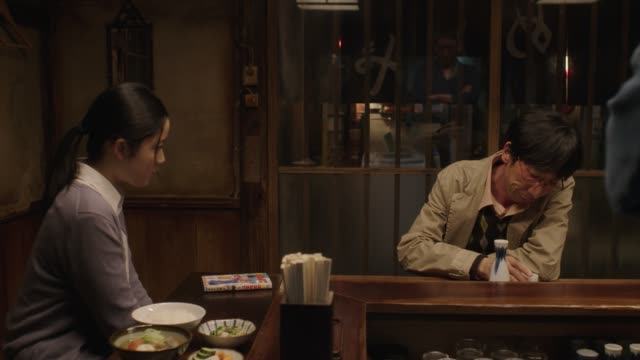

どうして・なぜ
| Polite | どうしてですか everyday polite なぜですか stiff, formal, written |
|---|---|
| Casual | どうして everyday なんで most casual, spoken |
Same meaning: "why". Only the politeness changes.

Pokémon The Series: Indigo League · Episode 2
どうしてネコがネズミに負けるのよ！
"Why would a cat lose to a mouse?!"
どうして means "why". It goes at or near the start and asks for a reason.
The answer usually ends in から ("because") or んです: ネズミが強いから ("because the mouse is strong").
On this card, のよ is just Meowth being annoyed.
Kekkon Dekinai Otoko · Episode 2
どうしてですか？
"Why is that?"
どうして can stand alone as a question, with just ですか after it. On this card, she's told he froze up at the last moment and asks: どうしてですか = "why is that?", polite but softer than なぜですか.
Quick Examples
Your friend left the party early.
どうして帰ったの？
"Why did you go home?"
CasualA teacher asks a new student.
どうして日本語を勉強していますか？
"Why are you studying Japanese?"
PoliteYour friend shows up an hour late.
なんで遅れたの？
"Why were you late?"
なんで: the most natural one between friends.
CasualIn a work meeting.
なぜですか？
"Why is that?"
なぜ sounds stiff in speech. You'll mostly see it in news and titles.
PoliteWith and without
昨日、休みました。
"I took yesterday off."
どうして休みましたか？
"Why did you take the day off?" Answer: 熱があったから ("because I had a fever").
Examples from Media

He Who Can't Marry · Episode 1
桑野さんはどうして建築家になられたんですか？
"Mr. Kuwano, why did you become an architect?"
なられた is an extra respectful なった ("became"). んですか asks for the story behind it, see ～んです.

Midnight Diner: Tokyo Stories · Season 2, Episode 7
どうして 描かないんですか？
"Why don't you draw?"
どうして + んですか: asking for the reason, politely.
Vinland Saga · Episode 3
どうして その場で殺さなかったんですか？
"Why didn't you kill him right there?"

Shirokuma Cafe · Episode 20
どうして引っ越したいの？
"Why do you want to move out?"
どうして at the start, の at the end to ask for the reason.
Only Yesterday
え？ どうして？
"Huh? Why?"
Brush Up Life · Episode 3
どうして？
"Why?"
Goblin Slayer · Episode 10
どうして？
"Why?"
Last Samurai Standing · Episode 3
なぜ助ける？
"Why are you helping me?"
なぜ: same "why", more formal or stiff.
Further Reading
A Dictionary of Basic Japanese Grammar
Grammatical Terms, "WH-Word" · p. 14
Entry "dō", Note on dō shite · p. 115